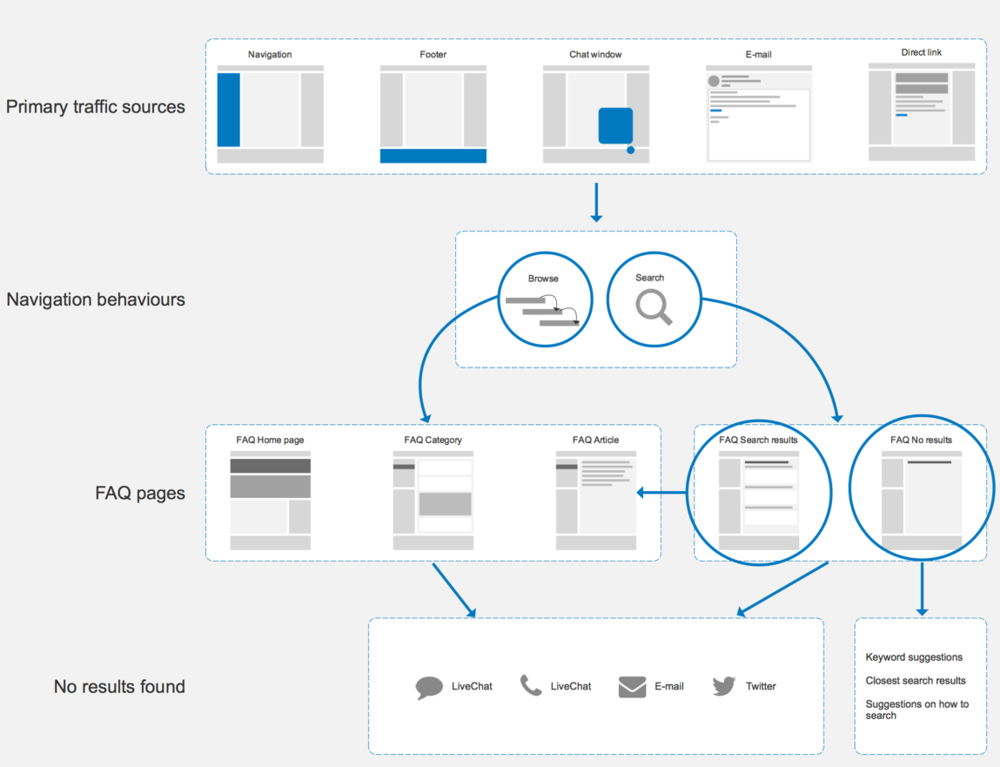

William Hill is a British bookmaking company. It operates worldwide offering betting opportunities in shops and online.
FAQ are a list of questions and answers, pertaining to online bookmaking at William Hill. They are one of the most important self-service tools online. If done properly, it can significantly reduce costs of maintaining a contact centre.
— https://blog.kissmetrics.com/get-your-faqs-straight/“Your FAQ page represents one of the most valuable moments in a conversion funnel. Nowhere else does a visitor so deliberately indicate that they want to know the details of your product or service.”
Bloated content, poor categorisation and very unintuitive layout were the top reasons why users preferred to call Customer Support Centre rather than look for answers online.
I partnered with the Product Owner, Business Analyst and System Engineer to define the initial scope and requirements.
Together with the team responsible for FAQ content I read through the entire list to find the ones which required immediate attention.
With the help of Data Analyst, I evaluated most common User journeys, analysed search query patterns and built a list of top 10 categories and related questions.
I organised and led a series of workshops with the business and developers to get an agreement on the approach and feasibility of the solution.
I prepared and executed a Card Sorting test to confirm my assumptions about the structure and taxonomy.
I reviewed several examples of FAQ designs from all over the internet. This helped me to narrow down ideas for interface design.
Based on the best practices I managed to come up with a few rough ideas for the content structure and layout. I organised a workshop with members from a creative team, PO and Dev Lead to collaborate on the final layout, which later I translated into a hi-fidelity wireframe.
To validate whether our design and content structure choices were correct I organised two testing sessions. First was with the content team to get their feedback and second will happen in the next couple of weeks.
Displayed in a small container on an overlay.
Quite a lot of answers are presented in a small overlay on top of the original container which hindered readability and usability.
Each question, excerpt and answer were thoroughly reviewed during several workshops and individual work. This piece of work was absolutely essential to complete before we even began thinking about the interface.
I spent a great deal of time looking through available data to find most common paths. I found that in most cases Users were not able to find the answers through search. Instead they were clicking through FAQs using categories and links.
Data analysis and workshops with content editors were invaluable in establishing proper content structure and taxonomy. Card sorting allowed me to confirm some of the assumptions made during those activities.
This part of the process is usually the most exciting for the PO and developers. Because it finally gives them some understanding as to how the new design will look like. I gathered every necessary stakeholder in a room and we started going through various ideas drawing them out on the whiteboard and large sheets of paper.
View the wireframePassword: Qu1et
I proposed to focus on articles which are searched most often. The rest of the content will have to remain unchanged until the content team will find time to work on it.
I partnered with each new UI designer to maintain consistency across pages and design variants.
I proposed a list of hypothesis for testing and created a research script. However, I could not participate because I left the company not long after.